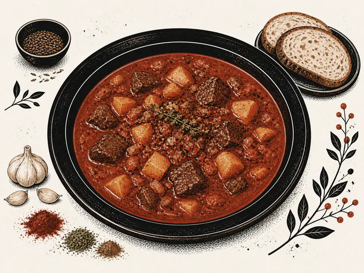
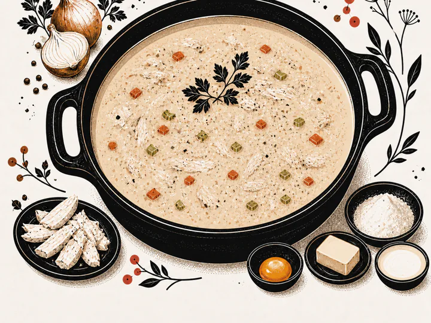
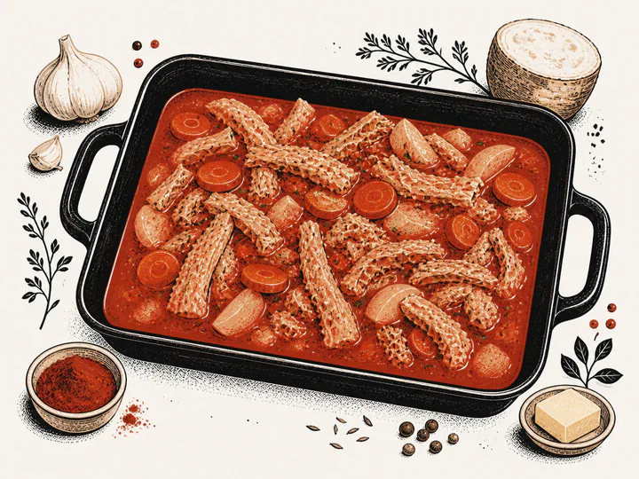

Soups
Recipe 064
Goulash soup · Gulášová polévka
Read recipe ↗
Three card treatments that move “Soups” into the text space. Each retains the existing image crop and uses the current AVIF/WebP delivery assets.
The most pronounced option. “Soups” becomes a small printed tab at the top of the text block, with the recipe number immediately beneath it.

Soups
Recipe 064

Soups
Recipe 065

Soups
Recipe 066
The quietest and most editorial option. Category and recipe number share one ruled line before the title, so the title gets the next clear beat.
SoupsRecipe 064
SoupsRecipe 065
SoupsRecipe 066
The most bookish option. A compact red index carries the recipe number, while the category name becomes the first full line of the card’s copy.
064Soups
065Soups
066Soups